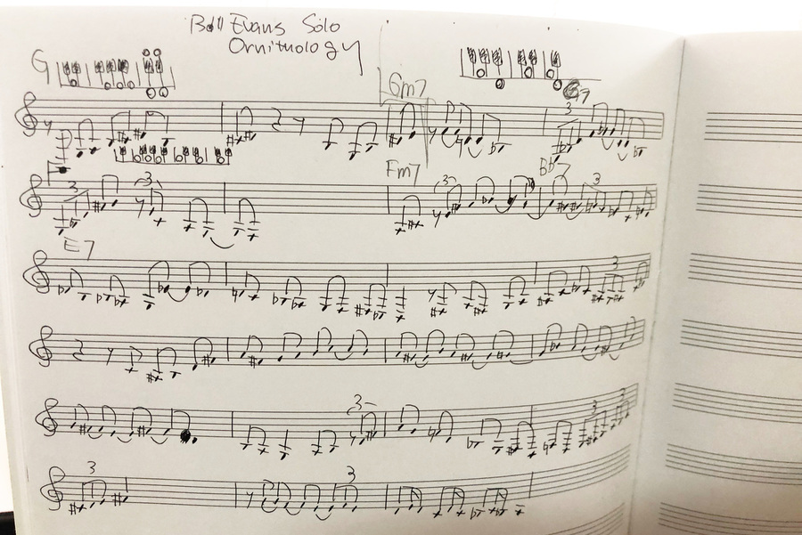

ZAF ２０２２年３月３０日
＜本日のテーマ＞
久しぶりのゲストだよ！
目次
- [6:30 - 7:00] 前座 （いちき）
- [7:00 - 8:00] 第１部 最近の話題から 2022年春（いちき）
- [8:00 - 8:30] 第２部 メラノーマ疑惑のホクロをAIで診断してみた（ちゃんもりさん）
- [8:30 - 9:00] おまけ
- 今日のおわりに
- 総合目次
YouTube のアーカイブ・ビデオはこちら
(
https://youtube.com/live/Pf8LNyyM82o)

前座
振り返り
- これまでの ZAF の発表資料は zenkei-ai-forum.github.io/pages にまとめてます。


- 前回のイベントの後、円に内接する三角形のはなし


（言われても、思い出せない。習ったんだっけ？ってことは、完璧に忘れてるってことか……）
- 思ったことは、
まぁ、普通に高校出て人生送ってる人が、 と。
２次方程式の解の公式を覚えてないとか、
sin や cos とか忘れたとか、
オレも、人のことは言えないな、


できてないことごと
- ZAM こと ZENKEI AI MAGAZINE...
- 前から言ってますが、
もうずっと、発行できてません。
(cf. ZAF 2111)

- ZAM 2112 号の原稿は、大島さんからきちんといただいているのですが……

- 前から言ってますが、
もうずっと、発行できてません。
(cf. ZAF 2111)
- ZAP こと ZENKEI AI ポッドキャスト...
- これ、今年（2022年）から週１にペースダウンしたんですが、
３月に入って２週目（3/9）以降、更新できてません……
- 気持ちを切り替えて、
できる範囲で、再開します！
- これ、今年（2022年）から週１にペースダウンしたんですが、
- フィードバック、まってます！！


最近の学び
- 最近、目が見開かれたことがあって、
満足してはいけない - 具体的には「Jazz の音楽」のこと
- これまでずっと（好きだから、というのが当然あるが）、
かっこいいな、くらいの「ふわっ」としたレベルで 観賞してきたが、
ミュージシャンたちがやってることは、 - 自分のことを考えても、これは当たり前のこと、
分かってて当然なことなんだけども。
- 「量子力学は波動です」とか言ってるコーチ（あれ、何者なんだろね） とか考えれば、ということ
- 研究者、科学者が日々やってることは、
そういう「フワッ」とした人たちが想像もできないような 極めて緻密なことを、
普通に山のように積み上げて行って構築されたものだ、
ということ。
- これまでずっと（好きだから、というのが当然あるが）、
- このことは、言われ尽くされてることだけど
- Wayne Shorter だったっけ？(Miles Daves だったっけ？)
天文学者なみのことを
俺たちはしてる
- Wayne Shorter だったっけ？(Miles Daves だったっけ？)
- ZAF でも、一度、 John Coltrane すげぇ、ってのをやりましたね。
- YouTube ZAF 2006


- YouTube ZAF 2006
- 今日は、 Bill Evans のピアノソロでやってる（めずらしい） bebop の曲
Ornithology の演奏について。

- この演奏は、大学の頃からずーっと聞いている。
- Bill Evans が、もろ bebop の曲をやるのは珍しいので、
結構、印象に残る演奏だけど、
この曲だけ浮いてるというか、どこが良いのか ずっと理解できなかった曲。
- Bill Evans が、もろ bebop の曲をやるのは珍しいので、
結構、印象に残る演奏だけど、
- この曲はスタンダードの How High The Moon という曲のコード進行に基づいた曲
- Bill Evans のこの演奏では、 「テーマ」（ヘッド）抜きで、いきなり「ソロ」がはじまる
- ソロは単音なので、音を採ることは、ゆっくりやれば、まぁ、誰でもできる。
- 最近、ゆっくりと、自分で採譜していたけど、
 最初のソロの部分、両手ユニゾンで弾いてる部分、 どこかどこに対応してるのか分かんなかった。 - というか、ソロ（一人）で演奏してるんで、
テンポとか適当に気分で弾いたりしてるのかな、くらいに思ってた。
- クラシックとか、音符は譜面に書かれてるので、
テンポで表現しないといけないせいなんだろうけど、
過剰にタメたりしてる、ああいう感じかな、みたいな
- クラシックとか、音符は譜面に書かれてるので、
- 最近、ゆっくりと、自分で採譜していたけど、
- 地道に採譜してるが、なかなか進まない……
がっ、最近、正解（？）を発見！きっちり採譜してる人がいた！！

- Bill Evans のソロに、伴奏をつけて弾いてみる！
- pv の助けを借りて、テンポを落とす（自分の腕がショボいので）

- pv の助けを借りて、テンポを落とす（自分の腕がショボいので）
- まとめ
（緻密に考えられた演奏だ）教訓： ディープラーニングのモデル
すげぇすげぇばっかり言ってないで、
きちんと論文読んで、
きちんと理解しましょう！
- この演奏は、大学の頃からずーっと聞いている。


最近の話題から
2022年春
2022年春
振り返り
- ZAF 2021年11月 最近の話題から
- ZAF 2021年8月 最近の話題から 2021年夏
- ZAF 2021年6月 GPT-3 で遊んでみた！
- ZAF 2021年２月 画像分類でSOTA更新した NFNets
- ZAF 2020年11月 画像分類の新手法 ViT と BYOL
- ZAF 2020年7月 GPT-3 と StyleGAN2
- ZAF 2020年1月 2020年版 最近の話題から
- ZAF 2019年9月 最近の話題から
NeRF
今日は
に注目します。
NeRF - Neural Radiance Fields
- Wired: A New Trick Lets Artificial Intelligence See in 3D

- 以下、記事で言及されていた論文をリストアップしておく

NeRF
- NeRF: Representing Scenes as Neural Radiance Fields for View Synthesis
- arxiv: 2003.08934 (local copy)

- github: bmild/nerf

NeRV
- NeRV: Neural Reflectance and Visibility Fields for Relighting and View Synthesis
- arxiv: 2012.03927 (local copy)

- youtube: https://youtu.be/4XyDdvhhjVo


Neural Volumes


NeRF-Tex
- NVIDIA: NVIDIA Research: NeRF-Tex: Neural Reflectance Field Textures (Jun 28, 2021)

- publication: NeRF-Tex: Neural Reflectance Field Textures (PDF, local copy)


NeRF in the Wild
- NVIDIA: Google’s New AI Model Improves 3D Image Synthesis of Outdoor Scenes (Aug 06, 2020)
- youtube: https://youtu.be/yPKIxoN2Vf0

- https://nerf-w.github.io/
NeRF in the Wild

Dex-NeRF
- arxiv: 2110.14217
(local copy)
Dex-NeRF: Using a Neural Radiance Field to Grasp Transparent Objects (Jeffrey Ichnowski, et al.)


Scene Representation Networks (SRN)
- NeurIPS 2019: PDF
(local copy)
Scene Representation Networks: Continuous 3D-Structure-Aware Neural Scene Representations (V. Sitzmann et al.)


Light Field Networks (LFN)
- arxiv: 2106.02634
(local copy)
Light Field Networks: Neural Scene Representations with Single-Evaluation Rendering (V. Sitzmann et al.)


その他、最近の発展
- Block-NeRF
Scalable Large Scene Neural View Synthesis

- arxiv: 2202.05263
(local copy)

- arxiv: 2202.05263
(local copy)
- Mip-NeRF 360
Unbounded Anti-Aliased Neural Radiance Fields
- arxiv: 2111.12077
(local copy)

- arxiv: 2111.12077
(local copy)
- pixelNeRF
Neural Radiance Fields from One or Few Images
- arxiv: 2012.02190
(local copy)

- github: sxyu/pixel-nerf (official)

- arxiv: 2012.02190
(local copy)
- Portrait NeRF
Portrait Neural Radiance Fields from a Single Image
- arxiv: 2012.05903
(local copy)

- arxiv: 2012.05903
(local copy)
- ViewFormer
NeRF-free Neural Rendering from Few Images Using Transformers
- arxiv: 2203.10157
(local copy)


- arxiv: 2203.10157
(local copy)


実践
- 悪いとは知りつつ……
- これまども、何度となく、試したけどわからん、となって、
きちんと論文を読まないといけません、と気づいてきたんだけど。 - 今日などは「前座」で、まさに、
何も得るものはない
（cf. 最近の学び）
- これまども、何度となく、試したけどわからん、となって、
実装を探す
- github: yenchenlin/awesome-NeRF


yenchenlin/nerf-pytorch
- github: yenchenlin/nerf-pytorch

- Jupyter Notebook

- blender/lego データセット（ショベルカーのモデル）をローカルで学習した結果
- Jupyter Notebook


kwea123/nerf_pl
- github: kwea123/nerf_pl


- Jupyter Notebook

- 学習済みモデルを使って render のみしてみた。


- Jupyter Notebook


本日のメイン
『メラノーマ疑惑のホクロをAIで診断してみた』

ちゃんもりさん
本日のおまけ
最近買った本
最近買った本
-
BERTによる自然言語処理入門
Transformersを使った実践プログラミング
-
ディープラーニングを支える技術（岡野原大輔）
「正解」を導くメカニズム
-
ディープラーニング 学習する機械
ヤン・ルカン、人工知能を語る
-
Natural Language Processing With Transformers
Building Language Applications With Hugging Face


{kind=link}
{kind=link}
今日のおわりに
……
今後の予定
- 次回 ZAF は 2022 年４月２７日開催の予定です。
- ZAF 講演者、 ZAM 執筆者、絶賛、大募集中です！
お気軽にお問い合わせください！
総合目次
- 前座 （いちき）
- 第１部 最近の話題から 2022年春（いちき）
- 第２部 メラノーマ疑惑のホクロをAIで診断してみた（ちゃんもりさん）
- おまけ 最近買った本
- 今日のおわりに